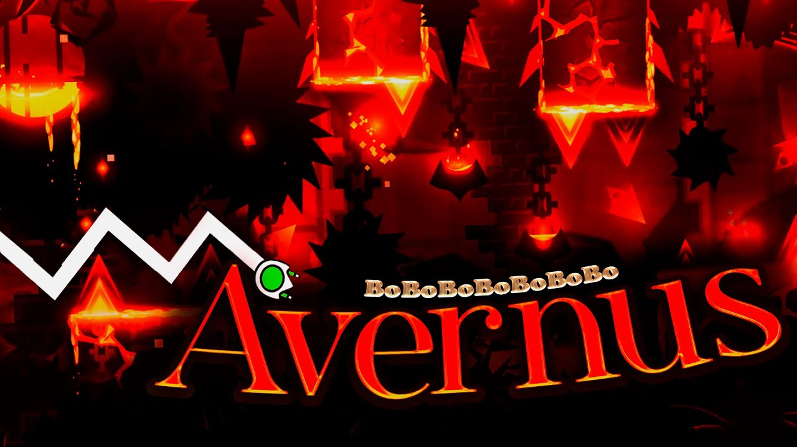
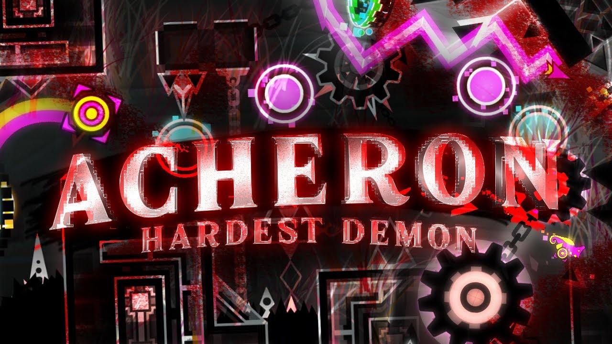
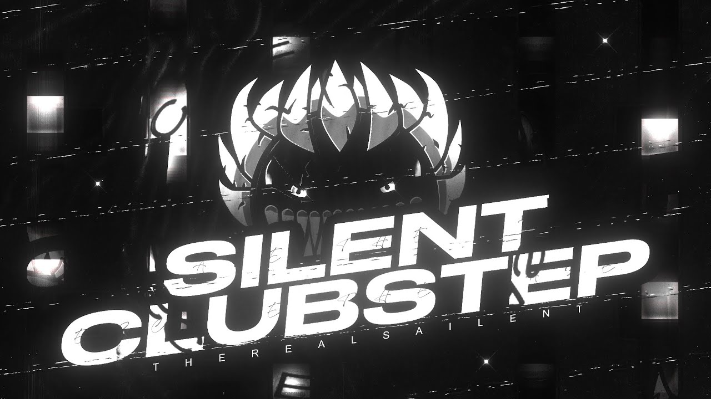

This is considered one of the worst geometry dash levels even though it's the hardest, it's only been beaten by one person, even after almost a year of it being out. Here is the link to the verification video
Many still consider this the hardest level in the game, even though it's #2 on the demonlist it's also considered really bad but not as bad as Avernus
This level was originally released 7 or 8 years ago with the intention of it being impossible, after many people racing to beat it, it finally was a few years ago.
